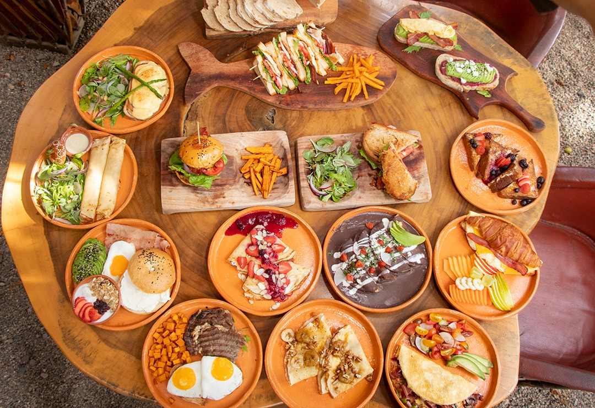

Lalaxtli Bread & Restaurant
Restaurante-café y panadería artesanal con vista al mar, conocido por su pan hecho con masa madre y platillos estilo café-bistro, perfectos para desayuno, brunch o comida ligera en un ambiente relajado frente a la playa.